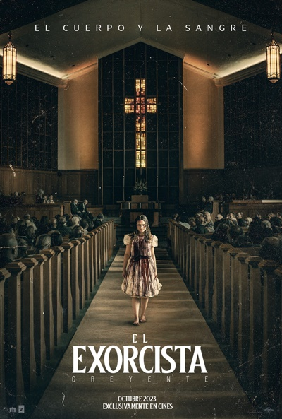

|  |
El Exorcista creyente |
Hace exactamente 50 años este otoño, la película de terror más aterradora de la historia llegó a la pantalla grande, sorprendiendo a las personas de todo el mundo. Ahora, este 12 de octubre comienza un nuevo capítulo. De Blumhouse y el director David Gordon Green, quien rompió el status quo con su resurrección de la franquicia de Halloween, llega El Exorcista: Creyentes. Desde la muerte de su esposa embarazada en un terremoto en Haití hace 12 años, Victor Fielding (ganador del Tony y nominado al Oscar® Leslie Odom, Jr. Una Noche En Miami, Hamilton) ha criado a su hija, Angela (Lidya Jewett, Chicas Buenas) por su cuenta. Pero cuando Angela y su amiga Katherine (la recién llegada Olivia Marcum) desaparecen en el bosque, regresando tres días después sin recordar lo que les sucedió, se desata una cadena de eventos que obligarán a Victor a confrontar el punto más bajo del mal y, en su terror y desesperación, buscar a la única persona viva que ha presenciado algo parecido antes: Chris MacNeil. |